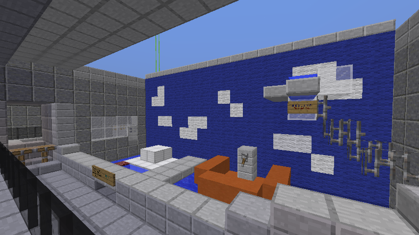

I can't help but look back on these images with this feeling of longing. I don't really know why.

These pictures are over a decade old at this point, taken from a really old park project on a long-dead creative server. while I didn't really leave that server on the best of terms, this was taken long before that all happened, and still, I feel... strange about them. Like they're not put to rest.

This isn't me trying to be creepy or anything; I just feel sad about them. Maybe it's because I know this world is long gone and I can never see what 13 year old me made outside of these photos, but honestly I think a larger part of it is bc of the context these photos were taken in. Back when doing stuff for the sake of doing it was OK.

What am I saying, it was always OK and it still is. I guess there's just this bug in my mind, this nagging little voice, that tells me that if something isn't productive or results in something else, then it's not worth doing.

I guess I just want to feel that way again. No expectations, no reason to deliver, no worries... just creation for the sake of creation. And that's not to say I didn't have hardship back then, but... I was less aware of everything else terrible happening.
That's probably what nostalgia really is.